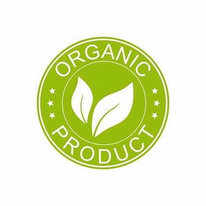

|
 |
|
The primary aim of this research identifies four important determinants influencing the purchasing intentions for organically produced foods from extant research, with a view to understanding relational significance
food quality, convenience and price, and supporting local farmers had a significant influence on consumer purchase intentions. However, supporting local farmers had a negative significance. Furthermore, animal welfare had no significant relationship with purchase intention.